Order Up!
Order Up!
ไทม์ไลน์การทำเกม
จากวันแรกจนถึงวันเปิดขาย
เกมครัวไทย MR สำหรับ Quest 3
เล่นพร้อมกันได้ 5 คนในห้องจริง
Mondเกมดีไซน์ ตัดสินใจ และเล่นทดสอบ
Almondo (AI)เขียนโค้ด เทสต์ และแก้บั๊ก
Fortal XR Arena Game Production พฤศจิกายน 2026
14 สัปดาห์ ทำ 2 รอบ
รอบแรกทำบน Unity แล้วย้ายทั้งเกมมาเป็นเว็บ ให้เปิดเล่นจากลิงก์ได้เลยโดยไม่ต้องติดตั้ง
ส.ค.ก.ย.ต.ค.พ.ย.
Unityเว็บcommit ต่อสัปดาห์
99 วัน6 ส.ค. ถึง 12 พ.ย. 2026
561 commitsUnity 132 และเว็บ 429
537commit ที่เขียนร่วมกับ AI
1,943เทสต์ที่ต้องผ่านก่อน deploy ทุกครั้ง
7 ช่วงของการทำเกม
6–25 ส.ค.
ต้นแบบ Unity
ครัวเล่นได้ใน MR
51 commits
11 ก.ย.–14 ต.ค.
ครัวเต็มรูปแบบ
หน้าที่ 5 คน
เสียงและ UI
81 commits
15–21 ต.ค.
ย้ายมาเว็บ
ทั้งเกม
ใน 1 สัปดาห์
146 commits
26–31 ต.ค.
สถานที่จริง
ห้องจริง
ล็อก Fortal OS
99 commits
2–6 พ.ย.
หน้าตาใหม่
ครัว low-poly
ปั้นมือ
124 commits
7–11 พ.ย.
เพื่อนร่วมครัว
ตัวเชฟ 3D
ฉลากขวด
47 commits
12 พ.ย.
เก็บงาน
แก้จาก
การเล่นจริง
13 commits
Unity 10 สัปดาห์ 132 commits แล้วเว็บ 4 สัปดาห์ 429 commits
ช่วงย้ายมาเว็บทำงานหนักที่สุด: 146 commits ใน 7 วัน
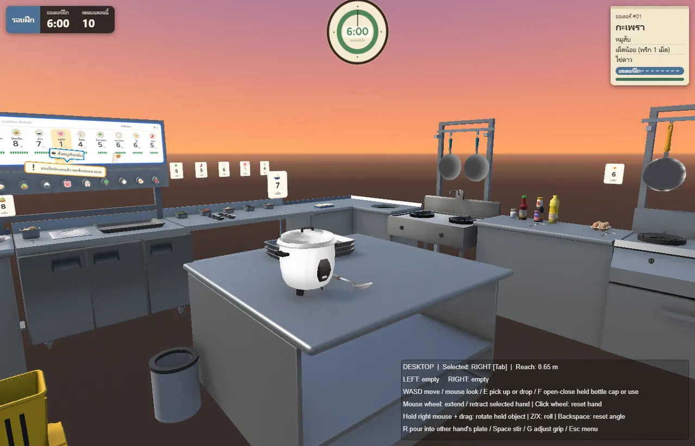
ครัวเวอร์ชัน Unity6–25 ส.ค.Unity 651 commits
ต้นแบบบน Unity
เริ่มจากศูนย์ ให้คนหลายคนยืนในครัวเดียวกันในห้องจริงให้ได้ก่อน
- โปรเจกต์ MR บน Meta XR SDKเล่นผ่าน LAN ทุกแว่นเห็นครัวตรงจุดเดียวกัน
- ตวง เท ผัด และไฟไหม้กระทะระบบทำอาหารชุดแรก
- QA รอบ 2 และ 3หยิบได้ทั้งสองมือ วางที่จุดเสิร์ฟหรืออ่างแล้วลงพอดี
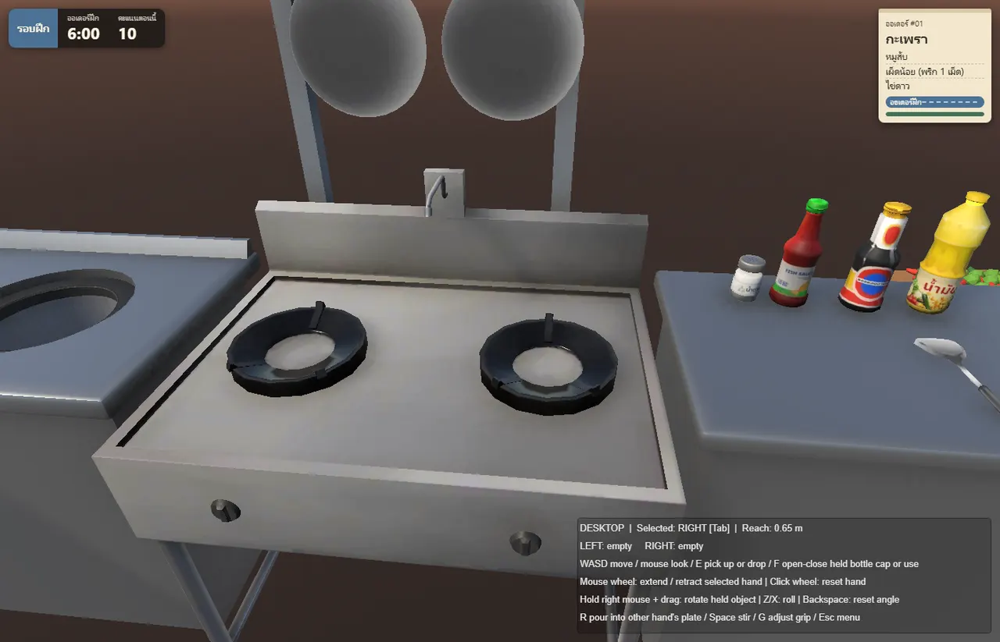
เตาและกระทะ เวอร์ชัน Unity11 ก.ย.–14 ต.ค.Unity 681 commits
ครัวเต็มรูปแบบ
จากของเล่นทดลอง กลายเป็นเกมที่มีหน้าที่ มีออเดอร์ และมีคะแนน
- เคาน์เตอร์ ชั้นวาง และ UI จากศิลปินวางงานศิลป์ตามที่ส่งมา ไม่ย่อไม่ขยาย
- เลือกหน้าที่ในครัวเชฟใหญ่อ่านออเดอร์ให้ทีมฟัง แทนแถวไอคอน
- ความร้อนแยกตามจุดในกระทะจานบอกได้ว่าผัดออกมาเป็นยังไง ข้าวเยอะแค่ไหน
- เสียงครบทุกเหตุการณ์ในครัวและมุกตอนจบรอบ แยกภาษาไทยกับอังกฤษ
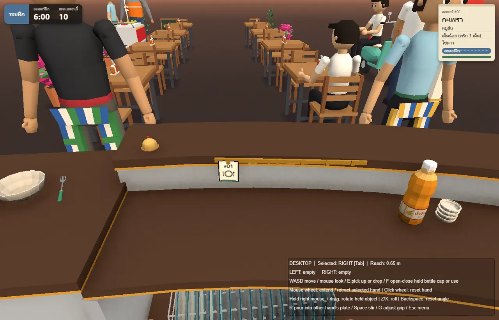
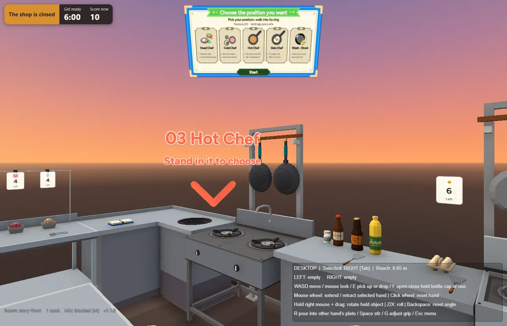
เปิดจากเบราว์เซอร์ ไม่ต้องติดตั้ง15–21 ต.ค.three.js + WebXR146 commits
ย้ายทั้งเกมมาเป็นเว็บ
เป้าหมาย: เปิดจากลิงก์ใน Fortal OS ได้เลย
- วันแรก แปลงกฎของเกมจาก C# เป็น JavaScript89 โมดูล พร้อมเทสต์ 1,246 ตัวที่ผ่านเหมือนต้นฉบับ
- ห้องเกมรันบน Cloudflareห้องเป็นคนตัดสิน ทุกแว่นเห็นผลเดียวกัน
- ฟิสิกส์จริงด้วย Rapierของล้ม ของกลิ้ง ทั้งในห้องและในแว่น
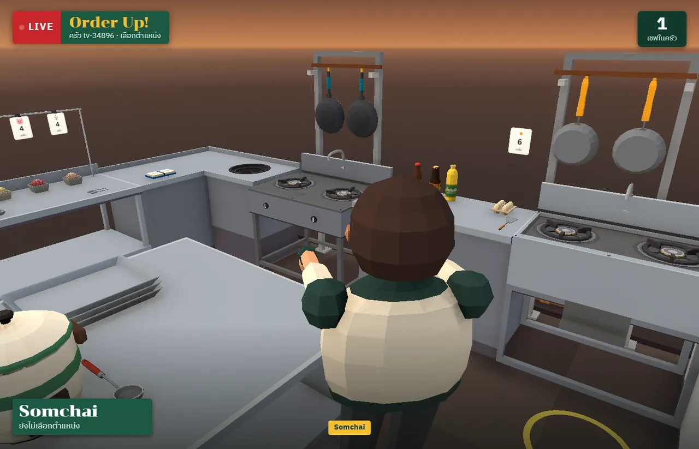
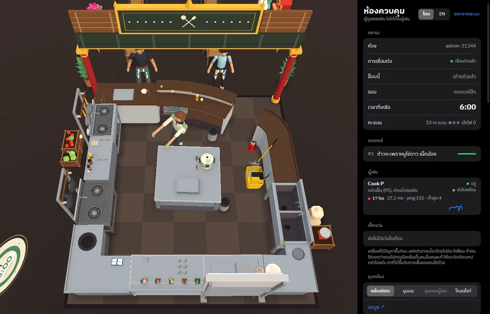
หน้าควบคุมของสตาฟ26–31 ต.ค.99 commits
เล่นในสถานที่จริง
เกมต้องเข้ากับห้องจริงและหน้างานจริงของ Fortal
- ตั้งครัวในห้องด้วยเลเซอร์บนพื้นชี้จุดแดงจุดน้ำเงิน แว่นจำห้องไว้ให้
- ผังสนาม Happitat 15 x 8 mดึงมาจาก LowPoly Studio
- เล่นได้เฉพาะแว่นของหน้างานผ่าน Fortal OS สตาฟติดตามและจบเกมได้
- กล้องผู้ชม จอบูธ และ voice chat
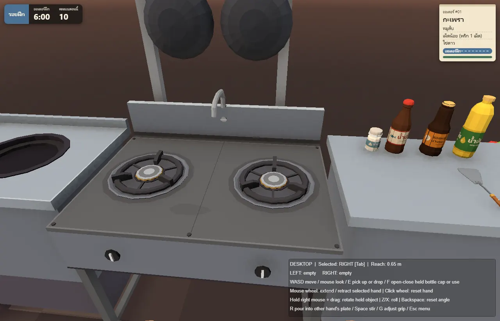
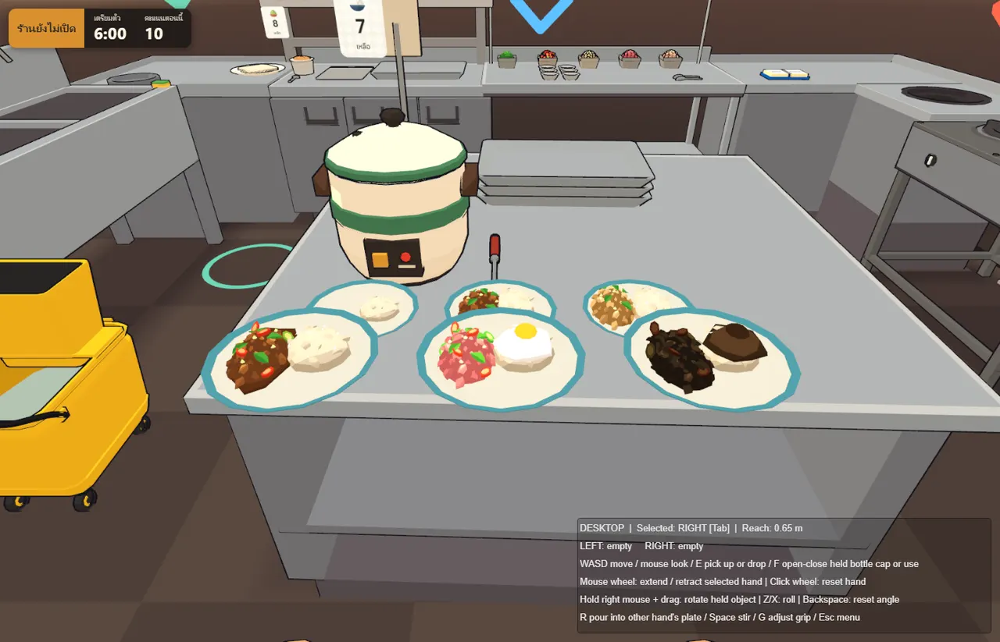
ผัดกะเพรา ปั้นมือทุกชิ้น2–6 พ.ย.124 commits
หน้าตาใหม่ทั้งครัว
low-poly ที่ดูปั้นมือ ไม่ใช่โมเดลที่ถูกลดโพลีจนเบี้ยว
- สร้างครัวใหม่ทั้งหมดด้วยโค้ดเคาน์เตอร์ เตา กระทะ อาหาร ทีละชิ้น
- โหมด casual เป็นค่าเริ่มต้นคนเล่นครั้งแรกสนุกได้เลย
- เตา กระทะ และอาหารละเอียดขึ้นเพิ่มโพลีแค่ 12%
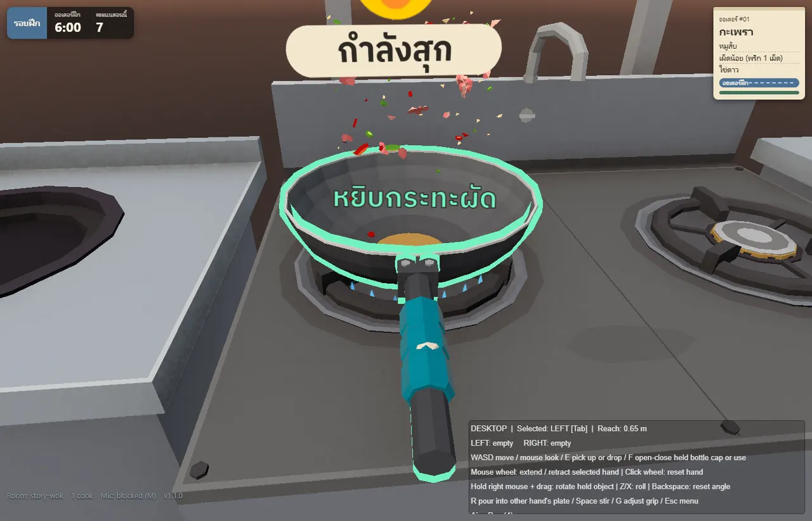
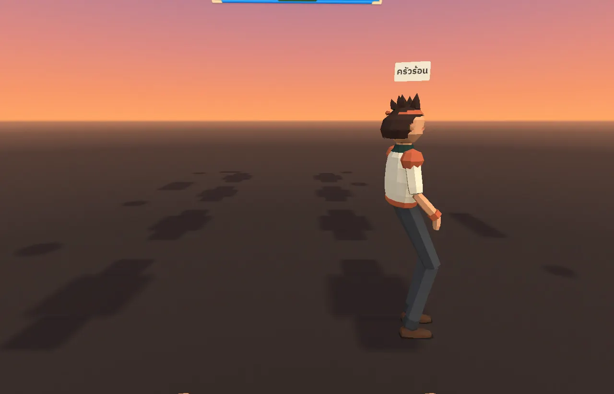
ขาปรับตามความสูงคนใส่แว่น7–11 พ.ย.47 commits
มีเพื่อนร่วมครัว
ทุกคนในห้องเห็นกันเป็นเชฟ และของในครัวดูเหมือนของจริง
- ตัวเชฟ 3D ของผู้เล่นคนอื่นเดินตามคนใส่แว่นจริง
- ฉลากขวดวาดใหม่ทั้งชุดเปลี่ยนไทยหรืออังกฤษตามปุ่มภาษา
- ถ้วยตวงทำมืออาหารพูนตามที่ตักจริง
- บอตเล่นทดสอบบนแว่นจริงเล่นวนเองได้ทั้งรอบ
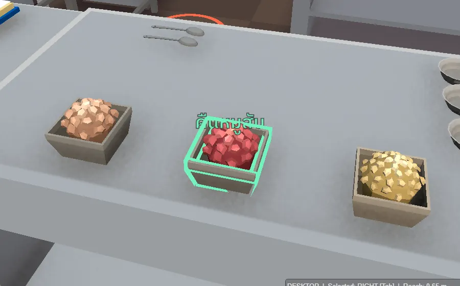
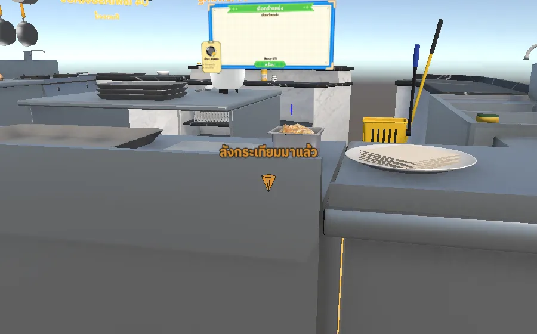
ลังของมาถึง มีป้ายลอยและเสียง12 พ.ย.13 commitsdeploy 3 รอบ
เก็บงานจากการเล่นจริง
Mond ใส่แว่นเล่น เจออะไรบอกทันที แก้แล้วขึ้นเว็บในวันเดียวกัน
- ถาดวัตถุดิบเรืองเมื่อกดถึงบอกว่ากดแล้วจะ ตัก หรือ คืน
- ลังของมาถึงมีป้ายและเสียงได้ยินจากทิศของตู้เย็น
- ปากขยับตามเสียงพูด และตัวเด้งอ่านระดับเสียงจาก voice chat
- มือปัดของเบาลง ไม่กระเด็น
วงจรเดียว วนทุกวัน
เล่นจริง
Mond ใส่แว่นเล่น
ในห้องจริง
บอกแบบคนพูด
คืนของยากมาก
มือปัดของกระเด็น
หาสาเหตุ แก้ เทสต์
AI หาต้นเหตุในโค้ด
แก้พร้อมเทสต์ใหม่
Deploy
ขึ้นเว็บเมื่อ Mond สั่ง
เทสต์ต้องผ่านครบก่อน
Mond ตัดสินใจเกมควรเป็นยังไง หน้าตาแบบไหน อะไรสนุก อะไรยังไม่ใช่
Almondo ลงมือเขียนโค้ด เทสต์ ลองบนแว่น และจำว่าเคยลองอะไรมาแล้ว
AI ทำให้เขียนเกมได้เร็ว
แต่เกมดีขึ้นเพราะมีคนใส่แว่นเล่นจริงทุกวัน
ย้ายทั้งเกมจาก Unity มาเป็นเว็บได้ในสัปดาห์เดียว
อีก 3 สัปดาห์หลังจากนั้น คือทำให้คนเล่นจริงในสถานที่จริงได้สนุกและไม่มีบั๊ก